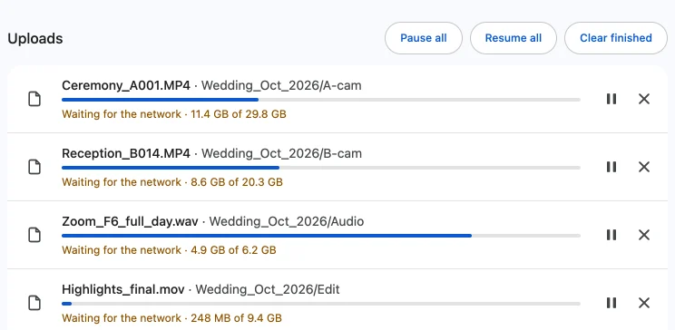

Why does my Google Drive upload say "paused" or "waiting for network"?
Published · Updated · By Sai Nath
"Waiting for the network" or "paused" means the upload lost its connection, or was stopped, and is not being sent. Restore the connection and keep the tab open. A Drive upload session can be resumed from the bytes Drive already holds, unless it has expired, which Google says happens after one week. Then the file starts over.
This guide comes from the maker of Uploft, the Chrome extension mentioned below. Google's limits and steps link to Google's own pages and were checked on 29 October 2026; what the extension does comes from its source code.
Does Drive upload offline?
No. An upload needs a connection to send each piece of the file to Google, so with no connection nothing moves. The Google pages linked below do not explain Drive's "paused" or "waiting for network" labels on the web, so read them as "not sending right now". Check the Wi-Fi or cable, open any other page to confirm the internet works, and leave the drive.google.com tab open until it reconnects.
Pausing is different from losing the connection. A paused file was stopped on purpose, and it stays stopped until you resume it. A file waiting for the network starts again by itself when the connection returns, in the extension's own uploader.

What resumes by itself?
In the extension, a file waits for the network and then carries on without a click, as long as the uploader tab stays open. Two parts of it do this.
-
The uploader page. It marks the file
"Waiting for the network", listens for Chrome's
onlineevent and then asks Drive how much of the file it already has, so it continues from there and not from 0. - The Drive tab. If an upload started on drive.google.com fails, the extension clicks Drive's own Retry button after 5, 20 and 60 seconds. When the computer is offline it waits, and 3 seconds after the network returns it tries again.
A file in the extension's uploader that you paused stays paused until you click Resume or Resume all.
Why does offline time not count as failure?
Because a dropped connection is not the file's fault. The uploader retries a failed piece with a delay that starts at 1 second and doubles up to 60 seconds, and marks the file failed after 20 failures in a row with no progress. While the computer reports it is offline, the uploader waits for the connection instead and does not add to that count. A long evening without Wi-Fi does not use up the 20.
Failures with the connection up do count. A file that fails 20 times running shows as failed, and you start it again.
When does a session expire and start over?
A resumable upload keeps its place in a session that Google says expires after one week. Google's developer page says: "A resumable session URI expires after one week." After that Drive answers that the session is gone and the upload must be restarted from the beginning.
The extension follows this. If Drive reports that a stored session has gone (a 404 or 410 answer), the uploader drops it, resets the file to 0 and sends it again as a new upload. If a file was last touched eight days ago, plan on the whole file going again, so resume inside a week where you can.
Upload without wifi
You cannot send a file with no connection at all, but a weak or switched connection is survivable. The pieces already accepted by Drive stay there, so a drop costs at most the piece in flight. Pieces start at 8 MiB and go up to 64 MiB on a fast link and down to 1 MiB on a slow one, so on poor wifi less is lost.
- Switching from Wi-Fi to a phone hotspot is fine: the file waits, then resumes when the new connection is up.
- If the computer goes to sleep the connection drops with it. The extension asks Chrome to keep the computer awake while it uploads, but closing a laptop lid will normally still put it to sleep.
- If you closed the uploader tab or restarted Chrome while offline, reopen the uploader and click Resume. Chrome may ask for permission to read the file again.
Drive's own website has no equivalent for a closed tab: it sends the file from the open page. For an upload that does not depend on a tab, Google makes Google Drive for desktop, and says you can pause or resume its sync at any time.
What the extension does not do
- It cannot upload with no connection.
- It cannot continue a session Google has expired; that file starts over.
- It cannot stop a closed laptop lid from sleeping the computer.
- It cannot fix a full Google storage. Click Storage in Drive's left-hand menu to check.
- It needs Chrome 116 or later on a computer, and it is not on the Chrome Web Store yet.
Uploft is free, and its source code is public. It isn't on the Chrome Web Store yet; the home page shows what it does and what it asks for.
Sources
Checked on 29 October 2026.
- Google Drive API: Upload file data (resumable uploads, session expiry after one week, restarting after an expired session).
- Google Drive Help: Use Google Drive for desktop.
- Google Drive Help: Manage your storage in Drive, Gmail & Photos.
- Uploft: source code (upload engine, retry and keep-awake).